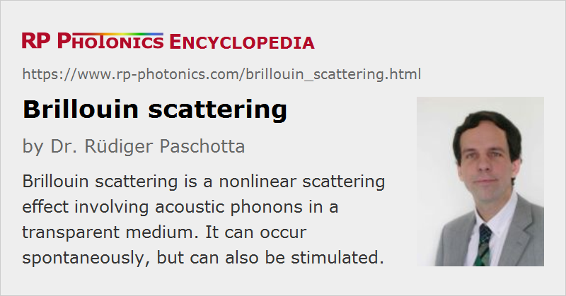

Brillouin Scattering
Definition: a nonlinear scattering effect involving acoustic phonons
More specific term: spontaneous and stimulated Brillouin scattering
German: Brillouin-Streuung
Categories: fiber optics and waveguides, nonlinear optics
How to cite the article; suggest additional literature
Author: Dr. Rüdiger Paschotta
Brillouin scattering is an effect caused by the χ(3) nonlinearity of a medium, specifically by that part of the nonlinearity which is related to acoustic phonons [1]. An incident photon can be converted into a scattered photon of slightly lower energy, usually propagating in the backward direction, and a phonon. The coupling of optical fields and acoustic waves occurs via electrostriction. The effect can occur spontaneously even at low optical powers, then reflecting the thermally generated phonon field. For higher optical powers, there can be a stimulated effect, where the optical fields substantially contribute to the phonon population. Above a certain threshold power of a light beam in a medium, stimulated Brillouin scattering can reflect most of the power of an incident beam. This process involves a strong nonlinear optical gain for the back-reflected wave: an originally weak counterpropagating wave at the suitable optical frequency can be strongly amplified. Here, the two counter-propagating waves generate a traveling refractive index grating; the higher the reflected power, the stronger the index grating and the higher the effective reflectance.
The frequency of the reflected beam is slightly lower than that of the incident beam; the frequency difference νB corresponds to the frequency of emitted phonons. This so-called Brillouin frequency shift is set by a phase-matching requirement. For pure backward Brillouin scattering, the Brillouin shift can be calculated from the refractive index n, the acoustic velocity va, and the vacuum wavelength λ:
(For Brillouin scattering in fibers, the effective refractive index must be used.)
In optical fibers, Brillouin scattering occurs essentially only in backward direction. However, rather weak forward Brillouin scattering is also possible due to effects of the acoustic waveguide.
The Brillouin frequency shift depends on the material composition and to some extent the temperature and pressure of the medium. Such dependencies are exploited for fiber-optic sensors.
Another important application of stimulated Brillouin scattering is optical phase conjugation. There are for example phase-conjugate mirrors for high-power Q-switched lasers which make it possible that the thermal distortions occurring in forward and backward direction in the laser crystal compensate each other.
Stimulated Brillouin Scattering in Optical Fibers
Stimulated Brillouin scattering (SBS) is frequently encountered when narrow-band optical signals (e.g. from a single-frequency laser) are amplified in a fiber amplifier, or just propagated through a passive fiber. While the material nonlinearity of e.g. silica is actually not very high, the typically small effective mode area and long propagation length strongly favor nonlinear effects.
Figure 1 shows what happens when a monochromatic light wave is injected into a 10 m long fiber. The counterpropagating Brillouin-shifted wave starts from quantum fluctuations with a very low optical power, but grows rapidly. Still, it stays far smaller than the input power of 1 W.
For a somewhat increased pump power of 1.8 W, the Brillouin gain (as measured in decibels) is nearly doubled, and the Brillouin wave becomes far stronger.
For a further increased pump power, the power of the Brillouin wave would become comparable to the pump power. In that case, substantial pump depletion occurs. For high SBS gain, that does not lead to a stable situation, but to chaotic fluctuations of the powers.
If the fiber is many kilometers long, milliwatt powers can be sufficient to cause substantial Brillouin scattering. However, one then has to take into account propagation losses, which are substantial of such fiber lengths. The affect both the pump wave and the Brillouin wave.
For silica fibers, the Brillouin frequency shift is of the order of 10–20 GHz, and the Brillouin gain has an intrinsic bandwidth of typically 50–100 MHz, which is determined by the strong acoustic absorption (short phonon lifetime of the order of 10 ns). However, the Brillouin gain spectrum may be strongly “smeared out” by various effects, such as transverse variations of the acoustic phase velocity [14, 19] or longitudinal temperature variations [11, 13]. Accordingly, the peak gain may be strongly reduced, leading to a substantially higher SBS threshold.
The Brillouin threshold of optical fibers for narrow-band continuous-wave light typically corresponds to a Brillouin gain of the order of 90 dB. (With additional laser gain in an active fiber, the threshold can be lower.) For trains of ultrashort pulses, the SBS threshold is determined not by a peak power, but rather by a power spectral density, as explained in a Spotlight article.
SBS introduces the most stringent power limit for the amplification and the passive propagation of narrow-band optical signals in fibers. In order to raise the Brillouin threshold, it is possible to increase the bandwidth of the light beyond the Brillouin gain bandwidth, reduce the fiber length, concatenate fibers with slightly different Brillouin shift, or (in high-power active fiber devices) exploit the longitudinally varying temperature [21]. There are also attempts to reduce the overlap of guided optical and acoustic waves, or to introduce significant propagation losses for the acoustic wave. To some extent, SBS problems can be reduced via basic amplifier design modifications, concerning e.g. the doping concentration, effective mode area and pump propagation direction.
On the other hand, the Brillouin gain can be used for operating a Brillouin fiber laser [5, 10, 18]. Such devices are often made as fiber ring lasers. Due to low resonator loss, they can have a relatively low pump threshold and a very small linewidth.
The temperature dependence of the Brillouin shift can be used for temperature and pressure sensing (→ fiber-optic sensors).
Questions and Comments from Users
Here you can submit questions and comments. As far as they get accepted by the author, they will appear above this paragraph together with the author’s answer. The author will decide on acceptance based on certain criteria. Essentially, the issue must be of sufficiently broad interest.
Please do not enter personal data here; we would otherwise delete it soon. (See also our privacy declaration.) If you wish to receive personal feedback or consultancy from the author, please contact him e.g. via e-mail.
By submitting the information, you give your consent to the potential publication of your inputs on our website according to our rules. (If you later retract your consent, we will delete those inputs.) As your inputs are first reviewed by the author, they may be published with some delay.
Bibliography
| [1] | L. Brillouin, “Diffusion de la Lumière et des Rayonnes X par un Corps Transparent Homogéne; Influence del´Agitation Thermique”, Annales des Physique 17, 88 (1922) |
| [2] | R. Y. Chiao et al., “Stimulated Brillouin scattering and coherent generation of intense hypersonic waves”, Phys. Rev. Lett. 12 (21), 592 (1964), doi:10.1103/PhysRevLett.12.592 |
| [3] | E. P. Ippen and R. H. Stolen, “Stimulated Brillouin scattering in optical fibers”, Appl. Phys. Lett. 21, 539 (1972) |
| [4] | R. G. Smith, “Optical power handling capacity of low loss optical fibers as determined by stimulated Raman and Brillouin scattering”, Appl. Opt. 11 (11), 2489 (1972), doi:10.1364/AO.11.002489 |
| [5] | K. O. Hill et al., “cw Brillouin laser”, Appl. Phys. Lett. 28 (10), 608 (1976) |
| [6] | D. Cotter, “Observation of stimulated Brillouin scattering in low-loss silica fibre at 1.3 μm”, Electron. Lett. 18, 495 (1982), doi:10.1049/el:19820336 |
| [7] | R. M. Shelby et al., “Guided acoustic-wave Brillouin scattering”, Phys. Rev. B 31 (8), 5244 (1985), doi:10.1103/PhysRevB.31.5244 |
| [8] | G. C. Valley, “A review of stimulated Brillouin scattering excited with a broad-band pump laser”, IEEE J. Quantum Electron. 22 (5), 704 (1986), doi:10.1109/JQE.1986.1073005 |
| [9] | R. W. Boyd et al., “Noise initiation of stimulated Brillouin scattering”, Phys. Rev. A 42 (9), 5514 (1990), doi:10.1103/PhysRevA.42.5514 |
| [10] | S. P. Smith et al., “Narrow-linewidth stimulated Brillouin fiber laser and applications”, Opt. Lett. 16 (6), 393 (1991), doi:10.1364/OL.16.000393 |
| [11] | Y. Imai and N. Shimada, “Dependence of stimulated Brillouin scattering on temperature distribution in polarization-maintaining fibers”, IEEE Photon. Technol. Lett. 5, 1335 (1993), doi:10.1109/68.250061 |
| [12] | R. G. Harrison et al., “SBS self-phase conjugation of CW Nd:YAG laser radiation in an optical fibre”, Opt. Commun. 163, 208 (1999), doi:10.1109/CLEO.1999.834182 |
| [13] | J. Hansryd et al., “Increase of the SBS threshold in a short highly nonlinear fiber by applying a temperature distribution”, J. Lightwave Technol. 19 (11), 1691 (2001), doi:10.1109/50.964069 |
| [14] | Y. Koyamada et al., “Simulating and designing Brillouin gain spectrum in single mode fibers”J. Lightwave Technol., J. Lightwave Technol. 22 (2), 631 (2004) |
| [15] | Y. Jeong et al., “Single-frequency, single-mode, plane-polarized ytterbium-doped fiber master oscillator power amplifier source with 264 W of output power”, Opt. Lett. 30 (5), 459 (2005), doi:10.1364/OL.30.000459 |
| [16] | A. H. McCurdy, “Modeling of stimulated Brillouin scattering in optical fibers with arbitrary radial index profile”, J. Lightwave Technol. 23 (11), 3509 (2005) |
| [17] | Y. Okawachi, “Tunable all-optical delays via Brillouin slow light in an optical fiber”, Phys. Rev. Lett. 94 (15), 153902 (2005), doi:10.1103/PhysRevLett.94.153902 |
| [18] | J. Geng et al., “Highly stable low-noise Brillouin fiber laser with ultranarrow spectral linewidth”, IEEE Photon. Technol. Lett. 18 (17), 1813 (2006), doi:10.1109/LPT.2006.881145 |
| [19] | M. D. Mermelstein et al., “11.2 dB SBS gain suppression in a large mode area Yb-doped optical fiber”, Proc. SPIE 6873, U63 (2008), doi:10.1117/12.770346 |
| [20] | B. Ward and J. Spring, “Finite element analysis of Brillouin gain in SBS-suppressing optical fibers with non-uniform acoustic velocity profiles”, Opt. Express 17 (18), 15685 (2009), doi:10.1364/OE.17.015685 |
| [21] | V. I. Kovalev and R. G. Harrison, “Suppression of stimulated Brillouin scattering in high-power single-frequency fiber amplifiers”, Opt. Lett. 31 (2), 161 (2006), doi:10.1364/OL.31.000161 |
| [22] | V. I. Kovalev and R. G. Harrison, “Abnormally low threshold gain of stimulated Brillouin scattering in long optical fiber with feedback”, Opt. Express 16 (16), 12272 (2008), doi:10.1364/OE.16.012272 |
| [23] | B. G. Ward and J. B. Spring, “Brillouin gain in optical fibers with inhomogeneous acoustic velocity”, Proc. SPIE 7195, 71951J (2009), doi:10.1117/12.812882 |
| [24] | A. Kobyakov et al., “Stimulated Brillouin scattering in optical fibers”, Advances in Optics and Photonics 2 (1), 1 (2010), doi:10.1364/AOP.2.000001 |
| [25] | Y. Xu et al., “Enhanced forward stimulated Brillouin scattering in silicon photonic slot waveguide Bragg grating”, J. Phys. D: Appl. Phys 52 (18), 184001 (2019) |
| [26] | M. Cao et al., “Forward stimulated Brillouin scattering in optical nanofibers”, J. Opt. Soc. Am. B 36 (8), 2079 (2019), doi:10.1364/JOSAB.36.002079 |
| [27] | G. P. Agrawal, Nonlinear Fiber Optics, 4th edn., Academic Press, New York (2007) |
See also: Raman scattering, Kerr effect, nonlinearities, fibers, fiber-optic sensors, The Photonics Spotlight 2007-09-01, The Photonics Spotlight 2010-03-03
and other articles in the categories fiber optics and waveguides, nonlinear optics
|  |
If you like this page, please share the link with your friends and colleagues, e.g. via social media:
These sharing buttons are implemented in a privacy-friendly way!